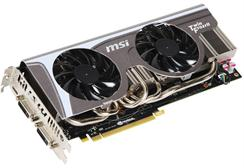

Параметры, имеющие особое значение при покупке видеокарт.

При сборке нового компьютера или модернизации старого дело доходит до выбора видеокарты. Так как видеокарта является одним из главных компонентов при покупке
компьютера, то к выбору видеокарты нужно подойти очень серьезно. Если вы хотите купить действительно хороший продукт, не потеряв при этом лишних денег.
В этой статье мы вам расскажем об основных параметрах видеокарты, на которые стоит обратить внимание при ее покупке.
К основным параметрам видеокарты можно отнести: объем видеопамяти, тип видеопамяти, частота графического процессора, частота памяти и ширина шины.
Остановимся подробнее на каждом из них.
В народе бытует мнение: чем больше объем видеопамяти, тем лучше видеокарта. На самом деле это не так. Объем видеопамяти мало влияет на
производительность видеокарты. Чем больше объем видеопамяти, тем больше данных в ней можно хранить, не используя медленный доступ к оперативной
памяти компьютера. В современных видеокартах сейчас устанавливают 512 MB, 1 GB и 2 GB видеопамяти. Также еще можно найти модели и с 256 MB и даже
4 GB памяти на борту. Соответственно, объем видеопамяти влияет на цену видеокарты. Оптимальным вариантом считается видеокарта с объемом памяти в 1 GB.
Перейдем к типам видеопамяти. Сейчас на компьютерном рынке можно встретить 4 типа видеопамяти: GDDR2, GDDR3, GDDR4 и GDDR5. Различие между ними
заключается в работе на более высоких частотах и пониженных напряжениях питания, что дает меньшее тепловыделение и энергопотребление. Оптимальным
вариантом будет видеокарта с типом видеопамяти GDDR4 или GDDR5.
Что же касается частот графического процессора и частот памяти, то тут все предельно просто. Чем выше частота, тем соответственно видеокарта будет
быстрее обрабатывать информацию и будет более производительна. Частота измеряется в мегагерцах.
Ширина шины является важным параметром в производительности видеокарты. Измеряется в битах. Большая битность шины памяти позволяет передавать
большее количество информации в единицу времени из видеопамяти в графический процессор и обратно, что обеспечивает большую производительность
видеокарты. В современных видеокартах встречается ширина шины памяти 64, 128, 256, 512 бит. Оптимальным вариантом считается 256 бит.
Мы рассказали вам об основных параметрах видеокарты, на которые стоит обращать внимание при ее покупке. Есть также множество других факторов,
таких как система охлаждения видеокарты, производитель и другие. Что касается производителя - скорее всего это уже дело вкуса. Также не стоит
забывать, для каких целей покупается видеокарта: для работы или для современных игр. Соответственно, отталкиваясь от этого, оптимальные варианты
подбора параметров можно выбирать самому на странице
сравнение видеокарт или проконсультироваться у специалистов в магазине.
Читайте также:
Новые видеокарты: GeForce GTX 660 и GTX 650
Следующая статья:
Подбор (Выбор) процессора.